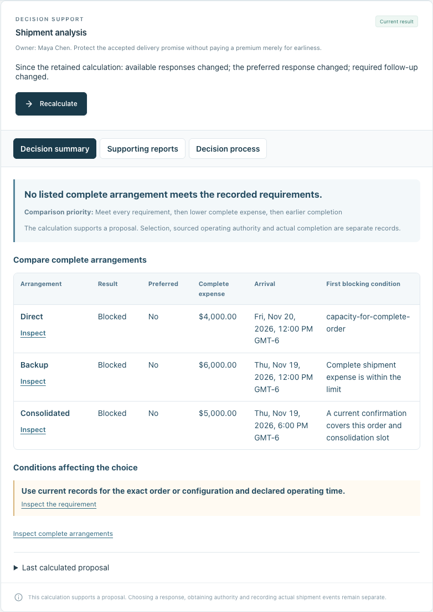
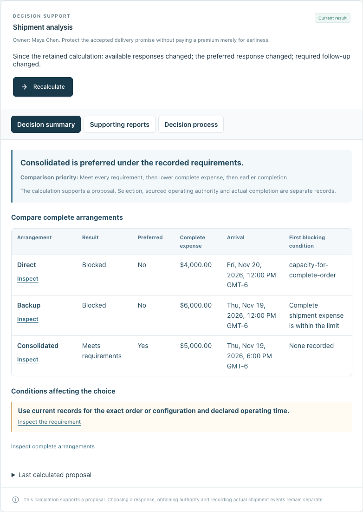
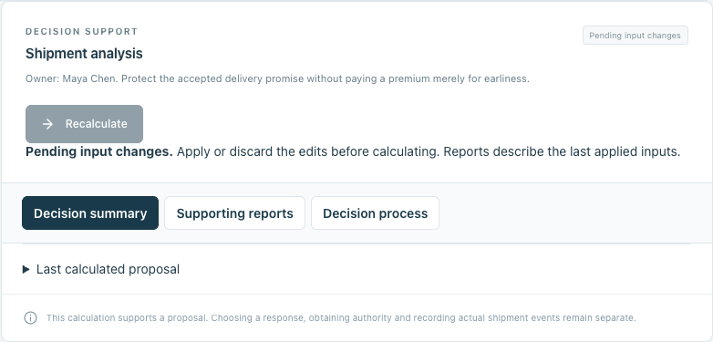
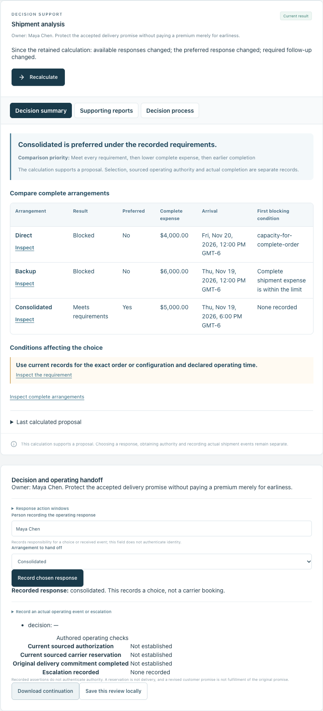
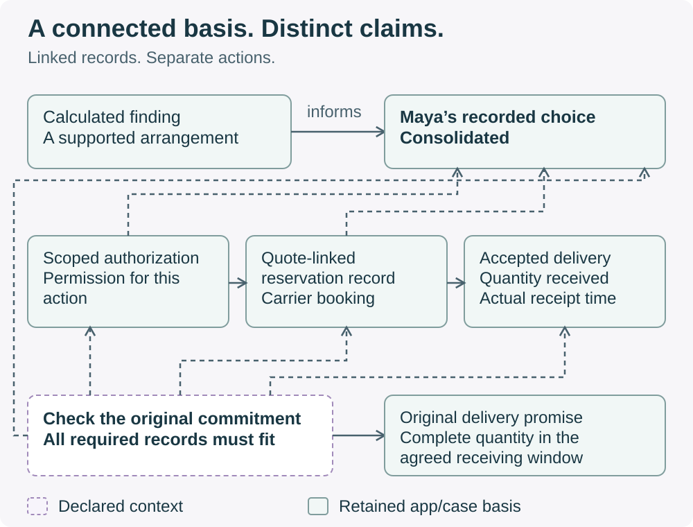
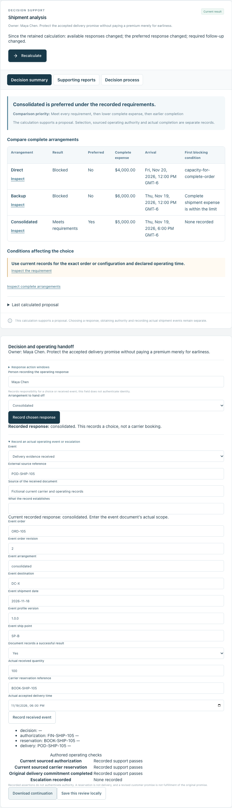

The morning CLI review has given Maya an exception she cannot leave in a spreadsheet. ORD-105 is now revision 2 and needs 100 units. Direct’s $4,000 quote has capacity for 99; the $5,000 Consolidated offer has enough capacity, but its loading-slot confirmation covers revision 1. Backup costs $6,000, above the approved $5,000 expense limit.
Finance wants a justified expense. Launch needs the complete order by Friday. The carrier coordinator must secure a usable slot before noon. Maya needs to resolve the specific blocker, retain the recorded decision and know what still has to happen before she can say the commitment was met.
A custom Shipment Reservation Desk continues the exact native operating review exported by the CLI. It combines the team’s record forms with Decision Lab’s SDK and shared decision screen. Maya works through one case without reconstructing its history or rewriting its shipment rules.
The orders, people and replacement documents are fictional. Screenshots show the working SDK example with its current cost-first app and authored operating workflow. Sources and scope explain the capture basis.
Apply inputs → Calculate/Recalculate → Decision summary. Maya uses the same controls as the first-shipment workflow. The desk also keeps her chosen response and the later authorization, booking and delivery records together.
An old confirmation blocks the shipment. A new one supports a proposal.
Shared basis. ORD-105 revision 2; 100 units; 8 a.m.; $5,000 expense limit. Direct capacity stays 99, Backup stays $6,000, and the cost-first app and all other case inputs stay fixed.
What changes. A newly received confirmation supplies SLOT-SHIP-105-REV2 for order revision 2 in place of the previous reference and revision-1 scope. The native before/after inputs retain every changed field.
A · Confirmation covers the old order
Obtain current support · No arrangement passes
- Order being shipped
- ORD-105 · revision 2
- Confirmation
- SLOT-C105 · revision 1


Maya asks the carrier coordinator for a genuine current confirmation or escalates another response. A confirmed record for the old order is insufficient.
B · Newly received confirmation covers revision 2
Propose Consolidated · $5,000 · Thursday 6 p.m.
- Order being shipped
- The same ORD-105 · revision 2
- New source document
- SLOT-SHIP-105-REV2 · revision 2


Maya reviews the newly received evidence and can put Consolidated forward. Direct still lacks capacity; Backup still exceeds the limit.
What this means for the decision. The justified response changes because the team obtained evidence that covers the actual order. Relabeling the old confirmation would manufacture support and is not the action demonstrated here.
Before the new document, Maya needs intervention rather than a recommendation. Direct can carry only 99 of 100 units. Backup exceeds the limit. Consolidated has capacity, but its confirmation belongs to revision 1.
After the carrier coordinator obtains a genuine current confirmation, Maya can propose Consolidated at $5,000. Direct’s capacity and Backup’s price stay unchanged. The different response follows the received evidence for the current order, under the same cost-first rule.
The current desk leads with the supported answer and a compact arrangement comparison. Use Inspect on an arrangement to open its exact Supporting reports view. Decision process explains the business questions and responses; Calculation dependencies exposes the technical handoffs when needed. Inspecting a row leaves the case and Maya’s chosen response intact.
The question stays fixed: “Which complete shipment arrangement can meet this order’s requirements?” The current confirmation changes the support for one candidate. The SDK’s contribution is to continue the same case, recalculate that assessment and retain the changed finding with its records. Maya still reviews and chooses; the carrier and responsible owners still authorize and perform the work.
What would the developer otherwise build?
A focused form alone is straightforward. The larger responsibility is keeping its recommendation, calculated basis and operating history consistent with the CLI as records change.
| Approach | Responsibility in this case |
|---|---|
| Checks written into the interface | Maintain capacity, scope, timing and ranking logic alongside review states and operating evidence. |
| A shared custom module or general-purpose solver | Reuse calculation code while defining the case, report, versioning and continuing-review contracts the two clients need. |
| Decision Lab SDK and the published workflow | Reuse the existing assessments, native review state and shared decision view; supply company forms, durable storage and external integrations. |
The SDK fits because the shipment model and workflow already express this decision. The desk renders the workflow’s SDK-materialized decisionSummary through the shared DecisionSummaryView. The developer can build the coordinator’s interface around that same review instead of translating its business rules into a second implementation.
A shared reference: facts, finding, choice, operating records.
- Maya and source ownersReview the actual records.Keep the received document’s original order, revision, scope and validity.
- SDK and pinned appAssess complete arrangements.Check all requirements, compare feasible alternatives and retain the earlier finding.
- Maya and operating ownersChoose and retain what happened.Retain the chosen response, actual authorization, carrier reservation and delivery evidence separately.
An arrangement is a complete combination of freight, preparation, resources and supporting records. The desk continues the CLI’s commitment assessment: check those complete candidates against the recorded requirements, then compare the ones that pass under the agreed priority. The supported conclusion is a feasible or preferred proposal within this case’s scope. Hermod’s workflow connects that assessment to the separate human choice and operating records.
This is the value of shared structure for automated reasoning in the integration: the CLI and React desk use the same case, assessment meanings and retained history. The developer can change Maya’s interface without recreating those shipment rules. Authored workflow checks also examine the separate operating records; reusing an app’s feasibility calculation alone would not supply that completion review.
Open the same case the CLI flagged.
The CLI’s review.json contains the original case, exact app and workflow versions, source receipts, owner and retained screening. The SDK reopens the native continuation:
export function openReviewJourney({ lab, value, app, definition, compatibleDefinitions = [] }) {
const run = lab.workflows.openRun(value);The surrounding integration verifies that it belongs to the desk’s expected app, workflow and shipment identity. It preserves the supplied inputs and current batch calculations. The desk opens the same supported finding; importing it records no business choice or authority.
The SDK runs in a browser worker:
const executor = createBrowserExecutor(), lab = createDecisionLab({ executor });Maya checks the imported records and current finding. The business owner determines whether the supplied sources are trustworthy and which supported response to choose.
The current Decision summary confirms the exception: Direct lacks capacity, Backup exceeds the limit and Consolidated lacks a current scoped slot.
The left-hand decision view in the comparison above shows that complete blocked assessment. Its earlier report remains available when Maya changes the records.
A new document changes the available response.
The carrier coordinator obtains a fictional newly issued confirmation, SLOT-SHIP-105-REV2, for ORD-105 revision 2, Consolidated at ship point SP-B, destination DC-X and the same shipment date and valid loading interval. A slot is the carrier’s confirmed loading opportunity for that particular scope and time window.
Maya records what the new document actually says. Its reference and revision change because a new confirmation was received. The other scope and validity fields remain applicable; she is not correcting an old document to make it fit.
The next assessment needs a precise claim: a current confirmation supports Consolidated for ORD-105 revision 2, SP-B and the required loading interval. This is the practical question in computational hermeneutics: what may the next step rely on? A scoped slot confirmation supports that requirement. It supplies neither spending authority nor a record that the carrier has booked or delivered the shipment.
See how the desk marks an unapplied change


While Maya edits, the desk marks the draft as pending and withholds a current recommendation. She chooses Apply inputs; the changed values enter the native workflow as supplied answers and make dependent findings stale:
if (!equal(next.answers[questionId].value, value)) next = lab.workflows.answer({ run: next, questionId,
value, status: isCalculationJourney(next) ? WORKFLOW_ANSWER_STATUS.SUPPLIED : WORKFLOW_ANSWER_STATUS.AWAITING_REVIEW, at: atTime(at) });The original Direct capacity of 99 stays intact. The tool neither increases that capacity nor renews unrelated permissions. Maya chooses Recalculate. The SDK solves the relevant dependency chain and reuses complete results whose basis has not changed:
return lab.workflows.solve({ run: current, ...(execution ? { execution } : {}), createdAt: atTime(at) });Now Consolidated is preferred at $5,000, arriving Thursday, November 19 at 6 p.m. Direct remains capacity-blocked; Backup remains over the expense limit. The new confirmation has resolved a particular requirement, rather than made every arrangement acceptable.
The right-hand decision view above shows the new result. The captured native inputs differ only in the confirmation’s reference and covered order revision; the original validity interval, order, requirements and cost-first priority remain intact. This isolates why a previously blocked candidate now supports a proposal. It does not establish that anyone has reserved it.
The preferred answer follows the business policy and the clock.
This app prefers the lowest complete expense among arrangements meeting every requirement, then arrival. For the unchanged ORD-104 case, Direct at $4,000 is preferred at 8 a.m. even though Consolidated arrives earlier. A valid confirmation alone does not justify paying more.
At 11:30 a.m., Direct’s 11 a.m. carrier cutoff has passed. Consolidated remains available until noon when its quote and scope are current. Advancing Assessment as of therefore changes the available comparison even if no price changes. Applying a changed case clock requires recalculation; changing a file’s creation time does not advance it.
The SDK compares retained findings directly:
const findingChanges = current && earlierRun ? labRef.current.reports.compareFindings({ before: earlierRun, after: run }) : null;The screen can show that available responses, preference or follow-up changed. It retains earlier reports as historical comparisons. Stale, invalid and incomplete findings do not become current recommendations.
After resolving the native assessment, the integration separately inspects completion, a checked feasible witness and established preference. A limited search can retain a passing plan without establishing the preferred alternative; this desk withholds the ranked proposal. A complete finding that nothing passes is a finished, useful business result. Genuine preference ties are retained.
The shared presentation uses the same native report:
: !desk.hasDraft && status !== REVIEW_STATE.INVALID && <DecisionSummaryView
summary={output?.decisionSummary}
onOpenReport={openReport}
onViewProcess={() => setActiveTab('process')}
/>)}DecisionSummaryView puts the comparison, cost, arrival, booking cutoff and material blockers first. Supporting reports retain the requirements, schedule and full assessment. The process and dependency views answer separate questions without crowding the default screen. Rendering the screen does not run a second set of shipment rules.
A supported calculation gives Maya a choice to make.
A complete current finding makes the supported arrangements available. Maya chooses Consolidated and selects Record chosen response; the integration retains the exact feasible plan and the assessment supporting her choice.
That choice remains a business act with its own actor. It supplies no spending authority, carrier reservation or completed delivery. The expense limit is not itself spending authority.


The desk identifies responsible roles for supported follow-up, such as obtaining a current confirmation or release grant, and shows the latest modeled selection and preparation time. Requesting a document does not satisfy its requirement.
Retain authorization, reservation and delivery separately.
For the worked continuation, Maya receives three explicitly fictional source documents:
| Received record | What it supports | What still needs evidence |
|---|---|---|
| FIN-SHIP-105 | Current authority for $5,000, issued at 8:05 a.m. for the selected order and arrangement. | A carrier reservation and actual delivery. |
| BOOK-SHIP-105 | A carrier reservation at 8:10 a.m., linked to quote Q-SHIP-105-consolidated revision 2 and covered by the authority. | Accepted receipt of the complete order in the promised window. |
| POD-SHIP-105 | All 100 units accepted Thursday at 6 p.m., linked to that booking and ahead of the original Friday 5 p.m. deadline. | External source authentication remains the company’s responsibility. |


Each document keeps its source reference, actual scope and actual time. The authored workflow checks this connected basis against the current selected assessment and the original receiving promise. A future delivery time is not evidence of an event that has happened.
Operating records live outside the inputs that determine plan feasibility. Receiving a booking receipt does not require the planner to book the shipment again. The shared integration appends the separate record using the existing workflow API:
return lab.workflows.answer({ run, questionId: OPERATIONS, value: [...run.case.journeyOperations, operation],
status: isCalculationJourney(run) ? WORKFLOW_ANSWER_STATUS.SUPPLIED : WORKFLOW_ANSWER_STATUS.ACCEPTED,
...(isCalculationJourney(run) ? {} : { actor, role: 'case-owner' }), at: atTime(at) });The SDK records portable history; the authored shipment workflow supplies the operating checks. This public API call does not by itself authenticate a document or establish completion.


Only after the complete chain passes does Original delivery commitment completed show Recorded support passes. That conclusion is conditional on the supplied source records. A reservation, an escalation or a revised delivery promise alone cannot produce it.
Carry the history between clients.
Download continuation retains the native workflow, including the original promise, supplied records and exact app versions. Export preserves applied inputs, calculated findings and operating history. A changed applied basis keeps earlier findings stale until recalculated; exporting never makes them current.
The downloaded continuation passes the same case back to the CLI. Reopening an unchanged current finding preserves the recorded choice and booking instead of replacing them with a needless assessment. Changed applied inputs need recalculation.
Current support also follows later received records. In a separate verification branch, a newly supplied negative carrier status replaces the earlier positive reservation for that selected assessment and plan. The original positive stays in history, but current reservation and completion support become Not established. The integration supplies a reconciled current-status record; the desk does not infer message order from an external event stream.
Maya can now distinguish a supported proposal, a chosen response, a booking and evidence that the original promise was met. Finance can inspect the $5,000 authority; operations can inspect the carrier record; the launch owner can inspect the accepted delivery.
The complete Shipment Reservation Desk implementation shows the forms, native workflow integration, local persistence and source-record handling. The CLI finds the cases needing attention. The SDK lets the team continue one case through a current calculation, a business choice and its operating evidence.